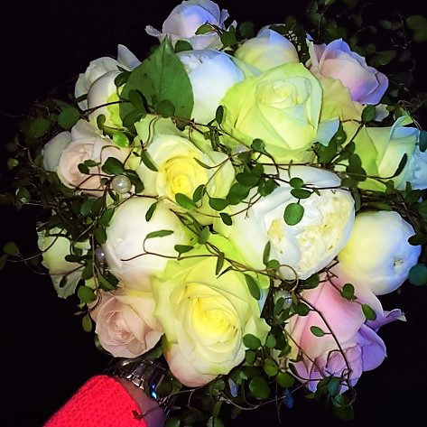
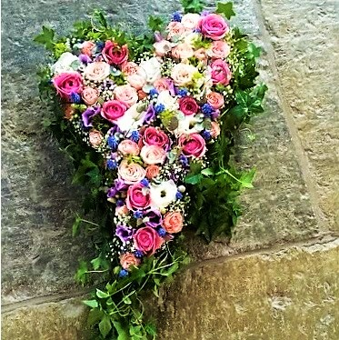

Vi är en väletablerad blomsterbutik som funnits på samma plats i många år. Idag driver Lilian Lindqvist Blomsterhörnan tillsammans med sin man Kjell Lindqvist sedan 11 år tillbaka med hjälp av sina 2 duktiga tjejer i butiken! Ni hittar oss mitt i centrum på Stockholmsvägen i Mariestad.
Här har vi ett stort och härligt utbud av snittblommor, blomsterarrangemang, krukväxter, smycken, godis och oljor, inredning mm. Vi hjälper dig med bl.a. företagsblommor, förmedlingar, begravning, gåbort blommor, bröllop och även den enkla vardagsblomman.
Genom bästa tänkabara servicen tillsammans med ett stort utbud på blommor och inredning hoppas vi vara den självklara blomsteraffären i Mariestad. Genom att hänga med i trender och skylta om ofta vill vi inspirera och sprida glädje!
Vi är medlemmar i kedjan Interflora. Vi skickar blommor till hela Sverige och även över hela världen. Hos oss kan man även köpa presentkort som går att använda i hela Sverige.
Emelie Gustavsson, Lilian Lindqvist, Marie Broberg, Kjell Lindqvist.
Här går det att se vad vi har för olika slags varor i vår butik.
Hos oss finner ni alltid fräsha färdiga buketter och även stort utbud av lösa snittblommor att välja mellan.
Vi har nyplanterade arrangemang samt gröna och blommande krukväxter.
Vi ger dig tips och råd om hur du ska få dina blommor att frodas!
Här kan ni hitta inredning från t.ex. DBKD, Miljögården, Wikholm form, Intersteel, Voluspa, Jimsch, Mr Plant, Mitt&Ditt och Light and Living.
Det finns choklad och te från Gooslander & Årechoklad.
Vi har mycket populära oljor & dressingar till matlagning från Sverigeskafferiet.
Hos oss finns även Smycken från Atsrid & Agnes som är i rostfritt stål.
Här finns med andra ord lite smått och gott av varje!
Ska ni gifta er? Hoppas då att vi får hjälpa just er med allt ifrån bordsdekorationer, näbbuketter, corsage och brudbukett.
Att ta farväl av någon är alltid svårt och jobbigt. Vi hjälper gärna till med att skapa något personligt och vackert.
Här hittar du information om våra öppettider och hur du kan kontakta oss.
Öppettider
Mån-Fre: 10:00 - 18:00
Lör: 10:00 - 15:00
Sön: Stängt
Adress
Stockholmsvägen 2,
54233 Mariestad
Mail
Blomsterhornan@interfloramariestad.se
Telefon
0501-101 81